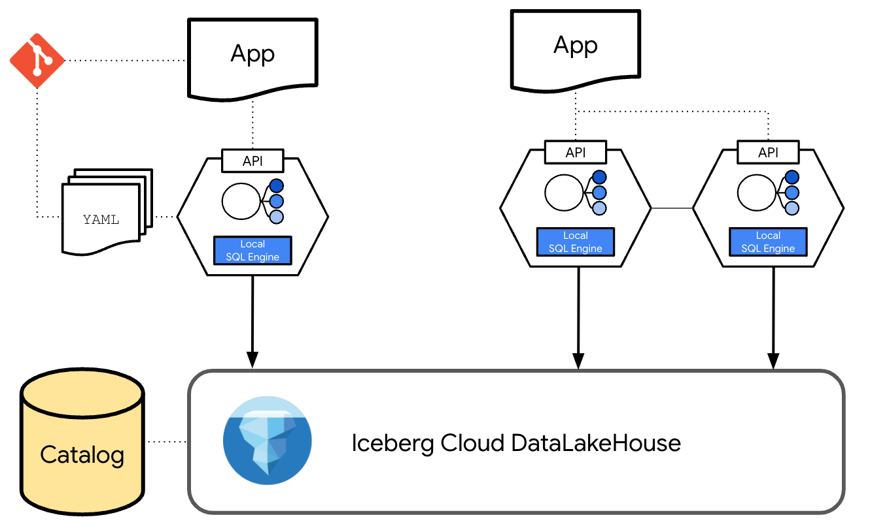

datapi-core documentation#
Welcome to the documentation for dataPi, a Python package that allows you to implement a distributed datalakehouse head made of data pods.
About dataPi#
dataPi (from data + API) allows you to define, deploy data pods, list them, and generate documentation. It enables application developers to specify their informational query needs in a simple YAML file and creates dataPods - container-based deployable units that contain a local engine to resolve queries.
Installation#
For installation instructions, see Installation.
How it Works#
Learn about the core concepts and workflow of dataPi in the How It Works section.
Getting Started#
Get up and running with dataPi by following our Getting Started with dataPi guide.
Commands#
Explore the various commands available in dataPi in the Commands section.
Data Access from Applications#
Learn how to access data from your applications using dataPi in the Data Access from Applications section.
Planned Features#
Check out the upcoming features and improvements planned for dataPi in the Planned Features section.